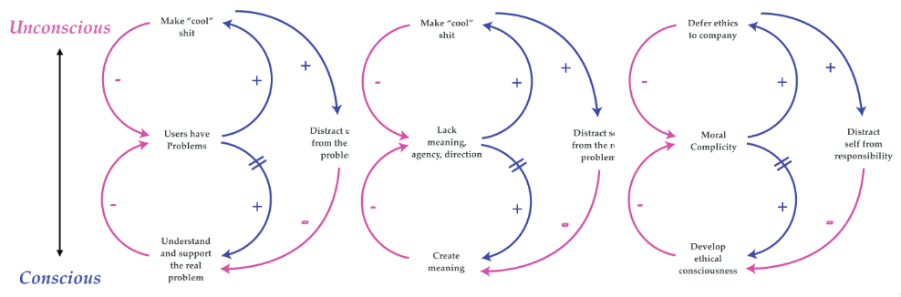

Usability triggered a revolution in computing, taking arcane number crunching machines and making them essential tools in so many human endeavors, even those that have little to do with mathematics. It turned the traditional design approach on its head. Initially, experts first built a system then trained users to follow it. User experience design starts with goals, observes how people actually think and act in the relevant context, then designs around those observations, and tests with users to ensure it fits the users’ understanding. These ideas were pioneered in the Silicon Valley. This was driven by the unusual confluence of a pioneering spirit and deep engineering skills. That merged with a strong counter-culture looking to empower individuals and communities. So much of the best of digital technology has its roots in these ideas. I feel fortunate to have grown up immersed in these ideas in the Silicon Valley of the 70s and 80s, and still feel that sense of idealism that these ideas can truly make the world a better place.
Unfortunately, “making the world a better place” has become a catch phrase. It is now mostly associated with single-minded investors (aka Venture Capitalists) looking to make money as fast as possible. One key piece is inspiring engineers to work non-stop by constantly telling them they are doing something valuable. Yet another social media doodad monetized by surveillance capitalism is clearly the opposite of making the world a better place. On top of that, these now well honed ideas of usability are widely used to make digital media technology literally an addictive drug so that wealthy investors can make money even faster. The rise of usability parallels the rise of surveillance capitalism. These two support each other and feed off of each other. Software must be fluid and easy in order to become addictive. Even if the task at hand is mundane: just keep clicking, look at the pretty animations, and keep following the likes! The Silicon Valley insiders know how destructive their wares are, they ban their own children from using them while continuing to sell them to the world.
Those of us who still truly believe in usability as a potential force of good are left feeling used and abused, wondering what on earth we can now do to stop the monster we helped create. Tools and design processes can be used for both good and evil. It is important to note that does not mean technology is neutral. “Algorithms are opinions embedded in code”. Basically all technologies have a bias, and the designers of those technologies have power to affect those biases. When someone designs a knife for use in the kitchen, it looks quite different than a knife designed to attack other humans. Of course, both can be used to attack people, but its much easier to attack with the switchblade, and a switchblade is a bad kitchen tool. Using addictive design, we have been sold on the idea that a switchblade is an all-purpose tool.
 |
Like social media, a hammer is great when you need it, but otherwise should be left in the toolbox. The tools of addictive design have convinced us to constantly carry our hammer around. It buzzes in our pocket, nagging us to try it out in just about any context. It uses our innate human desire for social approval to reward us whenever we use the hammer. Now its use is so widespread, wielding the hammer no longer looks out of context. There are people hammering while eating, working, walking, talking, and even in the bathroom.
Meet Usability’s Offspring: Surveillance Capitalism
Mobile phones could truly benefit people, but it is nearly impossible to open your phone to do one thing. Apps and ads immediately compete for your attention and time. Posting updates to family and friends happens through Facebook. Search, maps, and many other activities happen through Google. YouTube steers us to watch another video. Facebook inserts itself into our personal relationships. All of these are designed to keep you using them more and more, since that is how those companies make money. These services are built on usability, which causes us to use them more and more. Remember, with surveillance capitalism, the users are not the customer, they are the product. So those companies are using usability design to figure out how to keep users “engaged”, meaning using that platform as much as possible. That is the design problem they are solving. When the user is the customer, that can look very different. WhatsApp became massively popular with a business model of charging a dollar a year, regardless of usage. Their users were also their customers. Now Facebook aims to change all that, and WhatsApp users do not like it. Turns out it is very difficult to compete with free, so responsible business models are at a tremendous disadvantage. And many WhatsApp users are now flooding to Signal, which is a non-profit foundation working to survive on donations.
Foundations and governments need to measure and evaluate the projects that they fund, and they are starting to request surveillance capitalism techniques from the projects they fund. Schools are using web services that use addictive design, ostensibly to help kids learn, but are nonetheless getting kids hooked. Metrics are central to addictive design, it is based on tracking actual people and what keeps their attention. A/B testing provides a rapid way to test how to suck people in. Recommender systems are very effective at getting users to click on the next video or post. For those kinds of predictions to work, they first need a lot of data about how lots of people respond.
| “how designers shift the burden of responsibility through design“ |
|---|
|  |
Data-driven design is dangerous and powerful
Data-driven design can also be used to find the borders of what things they will tolerate beyond things in their interest. For example, so many software business models involve offering a service without payment, then finding ways to get the users to pay. This can be with their data or by upselling. An ethical approach to this kind of business model is to clearly define upfront what types of things require payment. Unfortunately, a more common approach is to first get users hooked on the service without paying. Getting users hooked is offered as a design service, the design equivalent of someone pushing addictive drugs. Once hooked, when the cost of migrating away from the tool is high, hit users with payment requirements. Using data-driven design, a service can measure that response in detail. Tracking all the users provides even better targeting of users based on profiling them.
Data-driven design is clearly powerful but it need not lead to harmful practices. Usage data can let small organizations effectively direct resources to the areas of biggest need. Crash report analytics quickly point out important bugs that otherwise would have taken days or weeks of effort to track down. Neither of these need data about people to be effective techniques.
Measure effectiveness rather than “engagement”
The best mobile software would be designed to make users spend as little time as possible using it. This is hard to measure. Users who find the software difficult to use would also use it as little as possible. We need to figure out how to measure that difference. Once we do, we can begin to understand what makes a good design in which people use the tool to efficiently solve a problem, then put the tool away once they are done. I think this is one of the biggest questions we can now work on as part of our work on Clean Insights. It is clear that learning to measure effectiveness will not be easy. Creating the discipline of user experience design was also not. After thinking about human-computer interaction and usability for over 25 years, I watched these ideas go from a nice idea to the dominant paradigm. It is clearly possible to reclaim usability by thinking ethically about how data is collected and used.
One key thing that makes user-centered design work so well is the cycle of research, design, implementation and testing. This is akin to scientific experiments, where there is a hypothesis that is tested. It can happen so fast because it can be decentralized and pieced out into a wide range of scales. User-focused design starts by trying to solve a problem, and iterates to continually improve. The goals often change as well, in response to new use cases, business models, technologies, and even product goals.
So often, the central focus shifts from real needs to keeping users “engaged”. Designing for engagement shifts the focus away from the task at hand, and instead is about making people use the software as much as possible. That distracts from providing solutions that reduce the time the user needs to complete a task. For example, no one is asking for software to help them send and receive ever more messages. The goal is effective communication and organization. If software is really addressing that need, that means users will spend less and less time using that communication tool. That is in direct conflict with a design process focused on “engagement”, which pushes for as much eyeball time as possible. The same design thinking based on psychology used in addictive design can also be used to actively avoid addictive qualities.
As long as a person is being tracked and profiled, there is an inevitable pull towards trying to keep that person “engaged”. If the data is instead about actions, not people, then the emphasis is on what the user wants to achieve. Billions have been spent on learning how to effectively track people, that does not need to be thrown away. The analytics software can be retooled to focus on usage rather than people. Responsible collection of usage data is the clear place to start in order to shift from “engagement” to effectiveness.